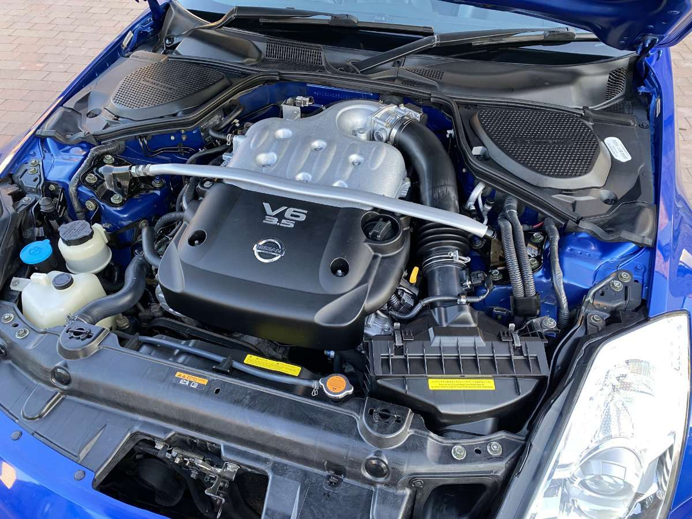
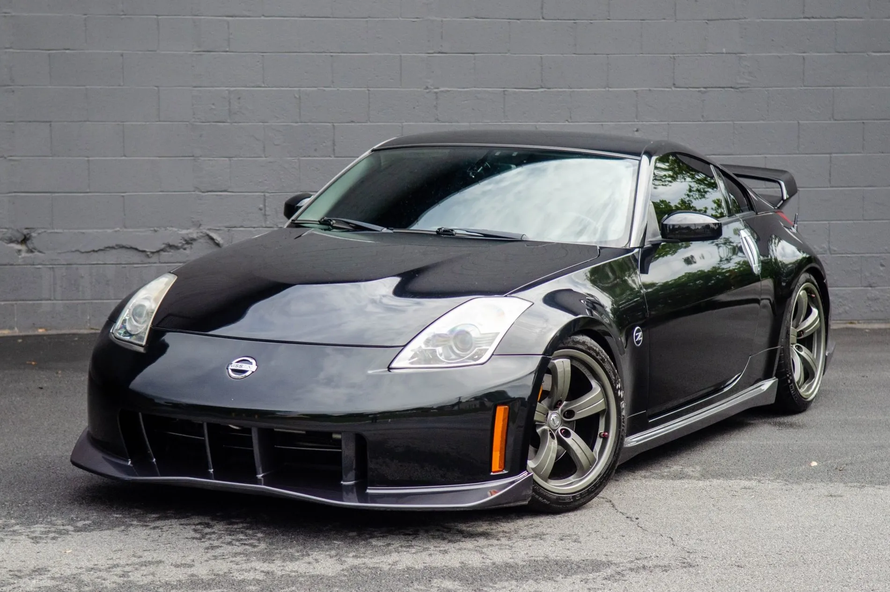

Engine Mechanics and Powertrain Details
The Nissan 350Z is famously powered by the VQ35 series 3.5-liter V6 engine, an engine celebrated for its distinct exhaust note and exceptional reliability. For the initial 2003 to 2005 models, the car featured the VQ35DE engine, which produced either 287 or 300 horsepower depending on the specific trim level. In 2007, Nissan updated the sports car with the VQ35HR "High Revolution" engine, pushing the factory output to a more aggressive 306 horsepower. This later engine variant boasted a higher redline and a dual-throttle body design, which significantly improved the car's high-RPM performance. Across its entire production run, this naturally aspirated power plant solidified the 350Z's legacy as an affordable, highly tunable enthusiast car.
Performance and Specifications
The Nissan 350Z is renowned for its performance-oriented specifications, which include:
- 287-306 horsepower
- Rear-wheel drive
- Reliable V6 engine
- 6-speed manual or 5-speed automatic transmission

The Nismo Spec

The Nissan 350Z Nismo represents the ultimate factory-tuned iteration of Nissan's iconic Z33 platform, elevating the sports car far beyond its base counterparts. Unlike standard models, the Nismo edition features a seam-welded chassis that drastically increases structural rigidity for sharper handling. It boasts a distinct, functional aerodynamic body kit that generates true downforce at high speeds, a feature completely absent on base trims. Performance is further upgraded with a track-ready suspension developed by Yamaha and heavy-duty Brembo brakes for superior stopping power. Additionally, it comes equipped with a viscous limited-slip differential and lightweight forged Rays wheels to maximize cornering grip. These extensive, race-inspired enhancements transform the Nismo from a standard grand tourer into a highly collectible, track-focused machine.
Standard models vs Nismo: